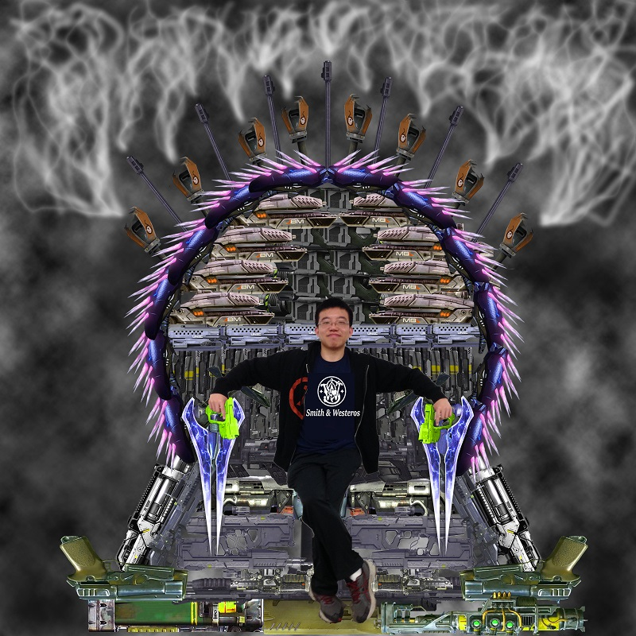

For my mashup project I have decided to recreate the Iron Throne chair that is commonly seen in the TV show Game of Thrones. The origins of the chair is that it is a pile of swords melted down with dragon fire and when the molten metal cooled, it formed the shape of a throne chair. According to the lore, this chair is very big and heavy. I reflected this by making the chair occupies the majority of the image; thanks to my small height, the chair appears even larger. Instead of swords, my chair will be forged from various video game firearms. I tried to use weapons that would be considered "iconic." Therefore I took guns primarily from Halo, Gears of War, Mass Effect, and Fallout.
Before starting I had a picture of the original chair so I could make accurate placement with the guns and help form the shape of the chair. Since the throne is a symbol of ruling over a kingdom, what better idea than to put myself in that chair for I had the power to create it in the first place. The result turned out to be very amusing since I had a very smug look on my face as I appear to be looking down on my nonexistent subjects. The semi-casual sitting pose goes well with my generally laid back appearance. The gun smoke came from the expression of "packing heat." The chair is packing so much "heat" that it must be vented from the barrels at the top of the chair.
